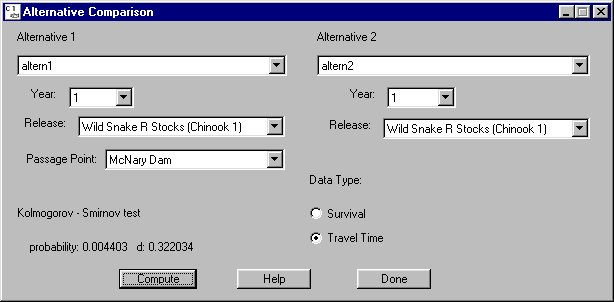

Monte Alt. Comparison opens the Alternative Comparison window for comparing two alternatives. You can compare two alternatives to determine if the probability distributions are statistically different.
Monte Alt. Comparison opens the Alternative Comparison window for comparing two alternatives. You can compare two alternatives to determine if the probability distributions are statistically different.
Selecting AnalysisMonte Alt. Comparison opens the Alternative Comparison window for comparing two alternatives. You can compare two alternatives to determine if the probability distributions are statistically different.
Alternative Comparison features
The Alternative Comparison window uses the Kolmogorov-Smirnov test. The null hypothesis tested is that the two distributions are drawn from the same population, i.e. they are identical. To test this hypothesis, the d statistic is used. Results from the Kolmogorov-Smirnov test are displayed in the lower-left corner of the window.
The closer the probability is to zero the more likely the two distributions are statistically different. As a typical example, we would reject the hypothesis that the two distributions are the same for probability < 0.01.

Alternative Comparison window